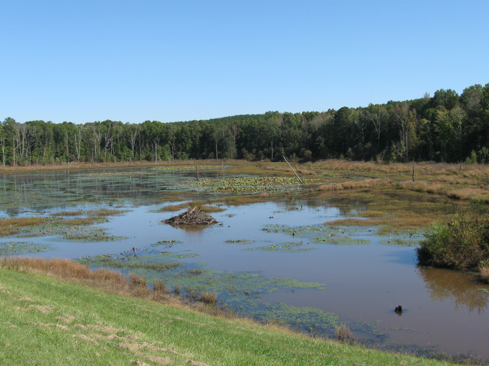
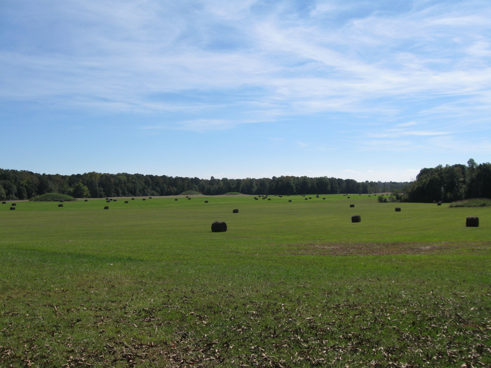
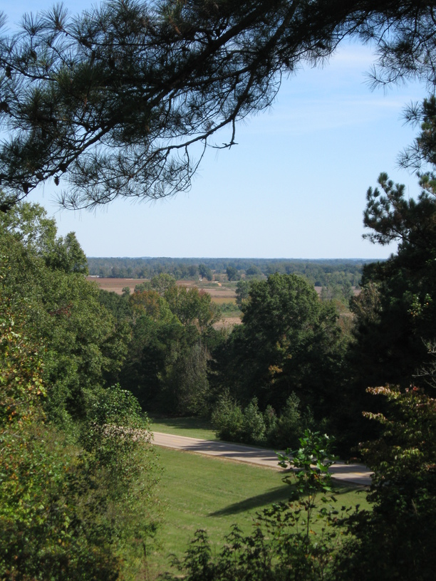
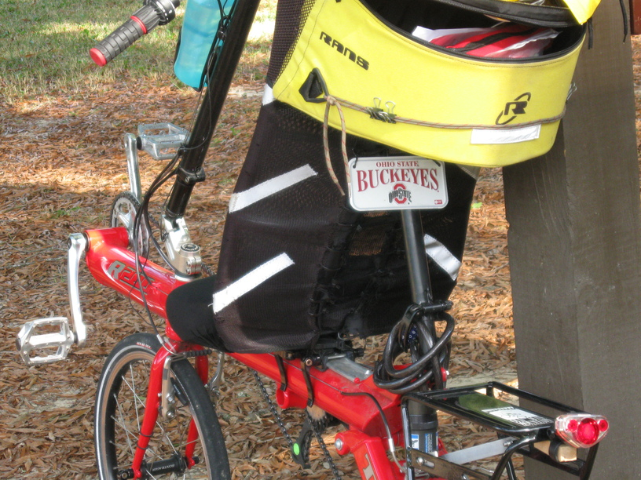
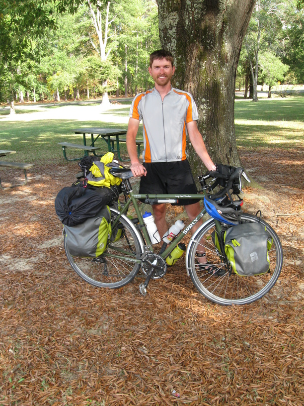

19 October 2008, Tombigee National Forest, MS
It was a very good thing I had the chance to sleep inside last night because I'm told it got down to 38° or 39°. Of course, tonight is supposed to be the same, and I've got an outdoor site this time.
I had what was probably my longest day yet today. I left around 8am & didn't stop until almost 7pm. It was basically dark, but I was going for a campsite & I didn't have enough water to just pull over & camp. I'm riding on the Natchez Trace—I picked it up this morning. It is very nice cycling—nearly completely flat, smooth pavement, & only moderate traffic.
In my first few miles I came upon two other loaded cyclists—older women—so I stopped to ask them about their trip. They were riding the whole trace—Nashville to Natchez—and were on their fourth day. Later, they caught up with me when I'd stopped for lunch, and we continued chatting. Their names are Lolly (spelling?) and Donna, and they were also Ohioans. They were also avid hikers, and both had hiked the AT and a Florida trail.
Later I caught up with the rest of their group—John and Tom. Tom is an OSU alum, and rides a red recumbent bike with a Buckeyes license plate.
They are planning to do the GAP next year.




